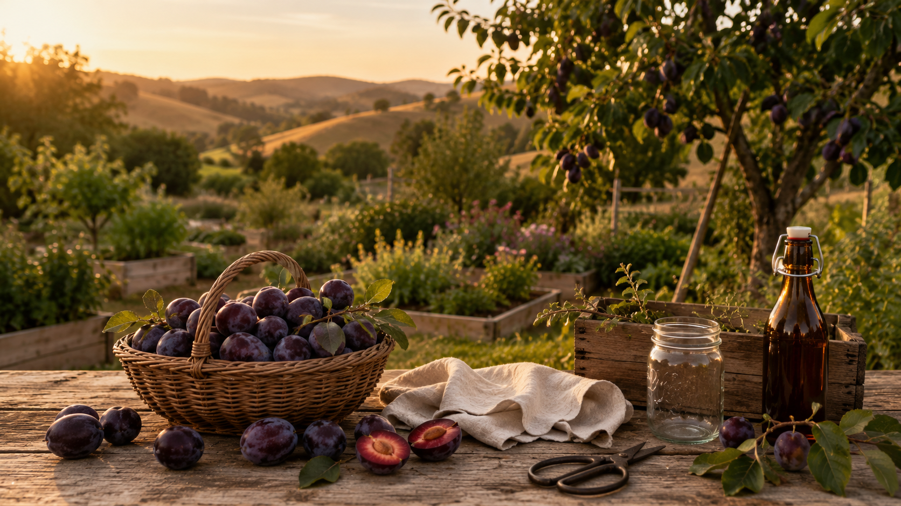
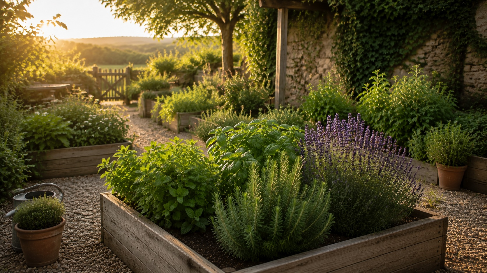

Plum Harvest Hub
The Plum Harvest Hub
By early June in Northern California, we start watching the tree more closely. The fruit begins to color, the branches get heavy, and suddenly the harvest arrives. Learn how to grow, pick, preserve, and enjoy fresh plums from orchard to table and garden to glass.
Plum harvest season
The harvest is coming fast. Start here.
A plum tree does not ease you gently into harvest season. One week you are checking color and firmness. The next week the counter is full, the birds have noticed, and every basket asks the same question: what are we making first?
Step 01
Harvest at Peak Flavor
Color tells you when to start checking, but touch and taste tell you when to pick. Choose ripe fruit for eating and slightly firm fruit for jam and syrup.
Harvest well →Step 02
Sort the Baskets
Set aside fruit for fresh eating, syrup, jam, freezing, and sharing before the harvest softens faster than you can use it.
Sort the harvest →Step 03
Make Plum Syrup
Plum syrup is the quickest bridge from orchard to glass: bright, colorful, and ready for cocktails, mocktails, lemonade, and sparkling water.
Make syrup →Step 04
Fill the Pantry
When the tree gives more than you can eat, jam turns one short harvest window into jars you can open all year.
Make jam →
From our orchard
Wait all year. Then everything happens at once.
By early June, we start paying closer attention to the tree. The fruit is coloring up, the branches are getting heavier, and every trip through the yard turns into a quick ripeness check.
At first it feels slow. Then the birds find the fruit. A few plums soften. One basket becomes two. Before long, the kitchen counter disappears beneath piles of summer.
That is when the good work begins. Jam jars come out. Syrup bottles get cleaned. Friends leave with bags of plums. Some fruit is eaten warm from the tree, some is saved for the pantry, and some becomes something beautiful to pour.
Rooted in the garden. Raised around the table.
Plum Harvest Hub
Everything we grow, harvest, preserve, and make with plums.
Plums ask us to pay attention. The season is short, the harvest is generous, and the best fruit rarely waits for a convenient weekend. Start with the fruit in front of you — fresh eating, syrup, jam, cocktails, mocktails — and follow the whole plum journey when you are ready.
The plum journey
From orchard to pantry to glass.
A plum harvest moves quickly. First you watch the tree, then you sort the fruit, then the kitchen fills with jars, bottles, and plans. Some plums are eaten fresh. Some become jam. Some become syrup. Some become a drink shared after dinner. The tree gives once, and the table carries it forward.
01 · Grow
Choose the right tree
Santa Rosa, Elephant Heart, Satsuma, and Italian prune plums each bring a different flavor, harvest window, and preservation strength.
Compare varieties →02 · Watch
Start checking in early June
In Northern California, the season often begins before midsummer. Color, softness, birds, and branch weight all tell you the harvest is close.
Harvest timing →03 · Sort
Decide what each basket becomes
Fresh eating, syrup, jam, freezing, and gifts all start with sorting the fruit before it softens on the counter.
Plan the harvest →04 · Pour
Make plum simple syrup
Syrup captures the color and tart sweetness of the fruit in a form that is easy to use all week.
Make syrup →05 · Preserve
Turn the extra into jam
Jam is how a short harvest becomes pantry shelves, gifts, breakfasts, desserts, and a little bit of summer saved for later.
Make jam →06 · Grow beyond
Plant what belongs nearby
Mint, rosemary, basil, and lavender each help carry plum season from the orchard into the glass.
Explore the garden →
Made with the harvest
Start with the Plum Bourbon Sour.
Once plum syrup is in the refrigerator, the whole harvest starts to feel usable. The Plum Bourbon Sour is rich, bright, and simple enough for a summer evening — one of the easiest ways to turn a basket of fruit into something worth lingering over.
Harvest at a glance
Plum season is short, generous, and worth planning for.

In Northern California, the first serious checks often start in early June. The exact window depends on variety and weather, but the rhythm is the same: watch closely, harvest in rounds, and have a plan before the fruit softens.
The case for a fruit tree
Why We Keep Growing Plums
A plum tree is not a casual plant. It asks for time, pruning, thinning, and patience. But when the harvest comes, it gives back in a way few garden plants can: baskets on the counter, jars in the pantry, syrup in the refrigerator, and bags of fruit sent home with people you love. For the full overview of planting timing by zone, see the Planting Guide.
Finding your favorite
The Plum Trees We Would Plant First
The variety you choose shapes everything that comes later: fresh eating, jam texture, syrup color, and how much fruit you can expect from a single tree. For a home garden with cocktails and preserves in mind, these are the plum varieties worth knowing.
Growing well
How to Grow a Plum Tree Worth Waiting For
Plums are not instant gratification. They reward the gardener who chooses the right variety, plants in full sun, waters deeply the first year, and prunes for light and air. Once established, a healthy tree can turn one summer harvest into a pantry full of jars.
What plums need
- Full sun: Give plum trees at least 6 hours of direct sun for strong fruiting and better flavor.
- Good drainage: Plums dislike soggy roots. Choose a site where water does not sit after rain.
- Air flow: Open spacing and pruning reduce fungal pressure and help fruit dry after wet weather.
- Deep first-year watering: New trees need consistent moisture while roots establish.
Care rhythm
- Late winter: Plant bare-root trees and prune while dormant.
- Spring: Watch bloom, support pollination, and water consistently.
- Early summer: Thin fruit after June drop so branches do not overload.
- Late summer: Harvest by taste and feel, not color alone.
By early summer, the work shifts from growing the tree to watching the fruit. The harvest does not arrive all at once, but when it starts, it asks for attention.
From the tree
How to Harvest Plums Well
The best plum harvest usually happens in stages. Some fruit is ready for eating fresh, some is better slightly firm for jam and syrup, and some needs a few more days on the tree. Taste is the real calendar.
Color is only the first clue
Plums often color before they are fully ripe. Use color to know when to start checking, then rely on touch, aroma, and taste.
Look for a slight give
A ripe plum gives gently near the stem end and releases from the tree without a fight. If it feels hard and clings tightly, wait a little longer.
Separate by use
Very ripe fruit is best for fresh eating, sauces, and quick use. Slightly firm plums are excellent for jam and syrup because they hold more structure and pectin.
Work in batches
Plums soften quickly after harvest. Process the ripest fruit first, refrigerate what needs a day or two, and freeze extra before it gets away from you.
Saving summer for later
How to Preserve Plums
Preserving plums is one of the most satisfying ways to carry the garden into the rest of the year. Jam fills the pantry, syrup waits for drinks, and frozen fruit keeps the harvest useful long after the tree is bare.
Once plums become jam, syrup, or frozen fruit, they stop being a short-season crop and become part of the way we gather long after the tree is bare.
Around the table
Using Plums in the Kitchen and the Bar
Plums can go sweet, tart, rich, or bright depending on how you use them. Fresh fruit belongs on the table, cooked fruit belongs in jars, and syrup has a way of making even a quiet evening drink feel seasonal.
Ways we enjoy plums
Plum Drinks for Cocktails, Mocktails, and Late Summer Evenings
A good plum syrup does a lot of work. It brings fruit, color, body, and sweetness to a glass without needing much else. Keep a bottle in the refrigerator during harvest season and the whole table has options.
Lessons learned
What We Learned the Hard Way
Plum trees are generous, but they are not hands-off. Most problems come from planting in the wrong spot, skipping thinning, harvesting too late, or letting one busy week turn ripe fruit into waste.
After the picking, sorting, preserving, and pouring, the point is still simple: use what you have, make something beautiful, and invite people in.
When the tree is loaded
When the Tree Gives More Than You Can Eat
Every plum grower reaches the same moment. The tree is producing faster than the family can eat, the fruit is softening on the counter, and the question becomes less about growing and more about stewardship. What do we do with all of this before summer slips away?
First Basket
Eat Fresh
The best plums rarely need a recipe. Keep a bowl on the counter, share them at breakfast, and let some be eaten warm from the tree.
Second Basket
Make Syrup
Pull a few pounds aside for plum simple syrup. It is quick, beautiful, and useful in cocktails, mocktails, iced tea, lemonade, and sparkling water.
Third Basket
Cook Jam
Jam is where the big harvest becomes something lasting. Slightly firm fruit gives good body, and ripe fruit brings the deep flavor.
Everything Else
Freeze, Share, Gift
Slice and freeze extra fruit, send bags home with friends, or turn the last baskets into gifts. A good plum year is meant to be shared.
Our favorite ways to save the harvest
Where the first baskets go.
A generous plum harvest can go in many directions, but these are the three we come back to first: syrup for the refrigerator, jam for the pantry, and one beautiful drink to celebrate the season before the counters are cleared.

Favorite quick preserve
Plum Simple Syrup
The fastest way to make the harvest pourable. Keep a bottle chilled and you have cocktails, mocktails, iced tea, and sparkling water ready all week.
Make the syrup →Favorite pantry project
Homemade Plum Jam
The pantry version of summer. A few jars turn one harvest into breakfasts, desserts, gifts, and simple hospitality all year long.
Make the jam →Favorite harvest cocktail
Plum Bourbon Sour
Rich, bright, and built around plum syrup. This is the drink that makes the whole preserving project feel worth it.
Make the cocktail →From bed to bar
What to Do With All These Plums
A plum tree has a way of turning one good week into a kitchen full of decisions. Some fruit becomes jam while it is still fragrant. Some is pulled aside for syrup. Some goes into a cocktail or a sparkling drink, and some is simply eaten over the sink because that is part of the harvest too.
Rooted in the garden. Raised around the table.
Harvest it
Harvest & Preserve Plums
When to pick, how to sort, and what to do when the harvest arrives faster than expected.
Read the guide →
Preserve it
Homemade Plum Jam
The full canning guide from tree to jar, with batch notes and flavor ideas.
Make the jam →
Pour it
Plum Simple Syrup
Pull a pound of fruit before the sugar goes into the jam and turn it into something pourable.
Make the syrup →Celebrate it
Plum Bourbon Sour
A late-summer cocktail that turns the harvest into something rich, bright, and worth lingering over.
Make the cocktail →
Beyond the orchard
Beyond the Orchard
The plum tree anchors the summer harvest, but the surrounding herbs carry that fruit all the way to the glass and the table. Mint brings freshness, rosemary adds depth, basil leans into summer, and lavender softens the edges. Together, they turn one backyard harvest into a full garden-to-glass season.

Herb Guide
Mint Guide
Fresh, generous, and ready for syrup, limeade, mojitos, and everyday gatherings.
Explore Mint
Herb Guide
Rosemary Guide
Woody, evergreen, and beautiful in bourbon, citrus, and winter syrups.
Explore Rosemary
Herb Guide
Basil Guide
Sweet, fragrant, and made for summer fruit, lemonade, and garden cocktails.
Explore Basil
Herb Guide
Lavender Guide
A calming harvest for syrups, spritzes, and quiet evenings around the table.
Explore LavenderCommon questions
Plum Growing FAQ
It depends on the variety. Many Japanese plums need a pollinator partner, while some European plums are self-fertile. Santa Rosa is partially self-fertile and often produces well on its own, making it a strong choice when you only have space for one tree.
Most plum trees begin producing a meaningful crop around year three or four, with heavier harvests as the tree matures.
Santa Rosa is a favorite for cocktail syrup because it has strong color, bright acidity, and balanced sweetness. Elephant Heart and Satsuma can also make beautiful syrups.
Color tells you when to start checking, but taste and texture tell you when to pick. A ripe plum gives slightly near the stem and releases easily from the tree.
A mature, healthy plum tree can produce 50 to 100 pounds of fruit in a good season, sometimes more. That is why preserving plans matter.
Drink responsibly. Every mocktail on this site is just as good as the cocktail version. Enjoy the garden. Enjoy the bar. Be safe, be kind, and look after each other.